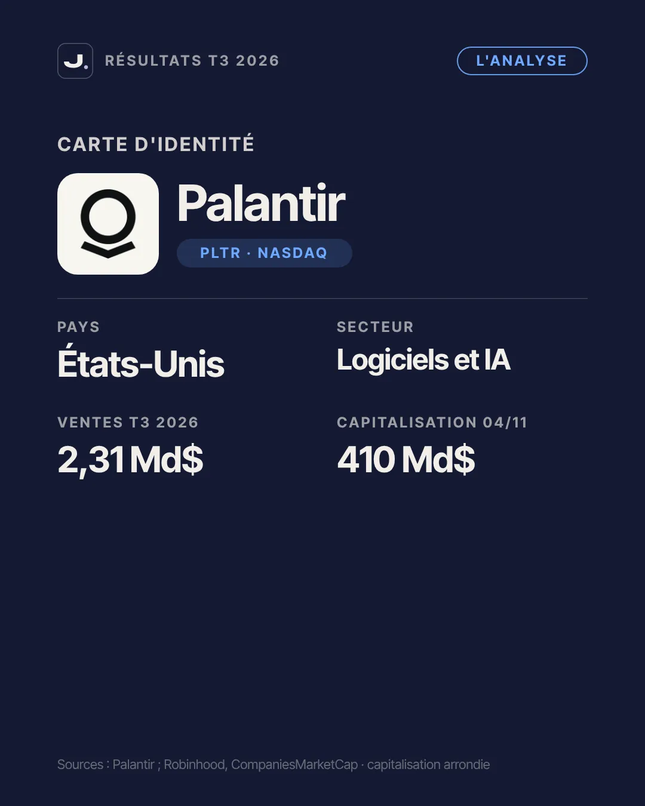
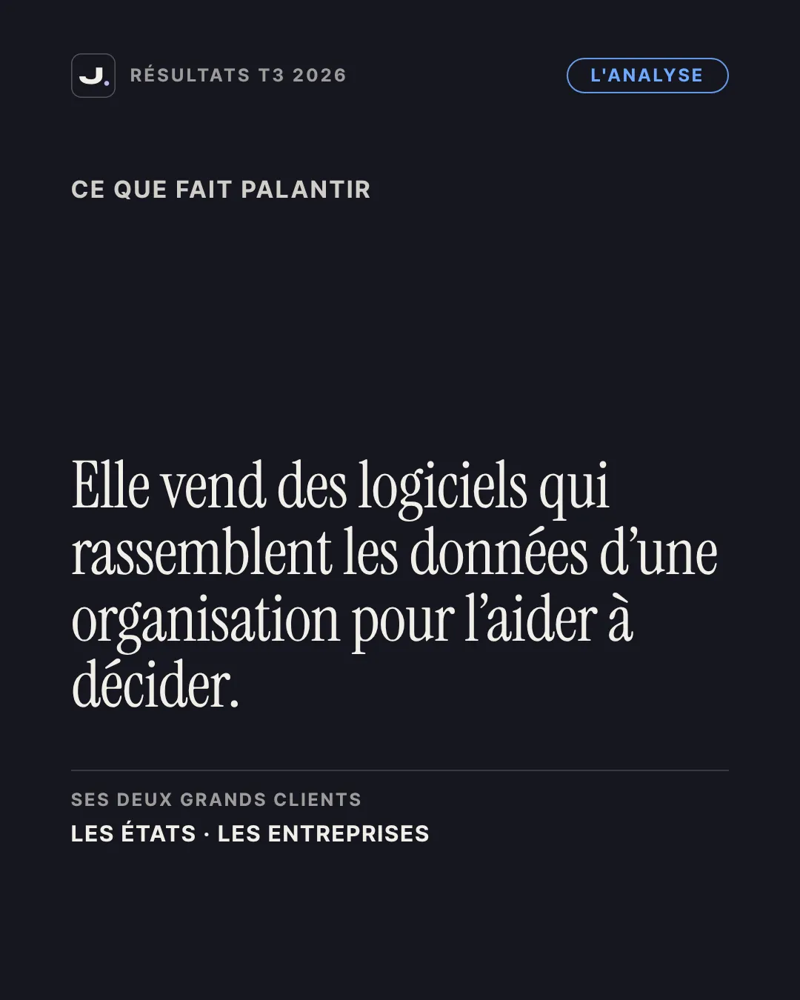
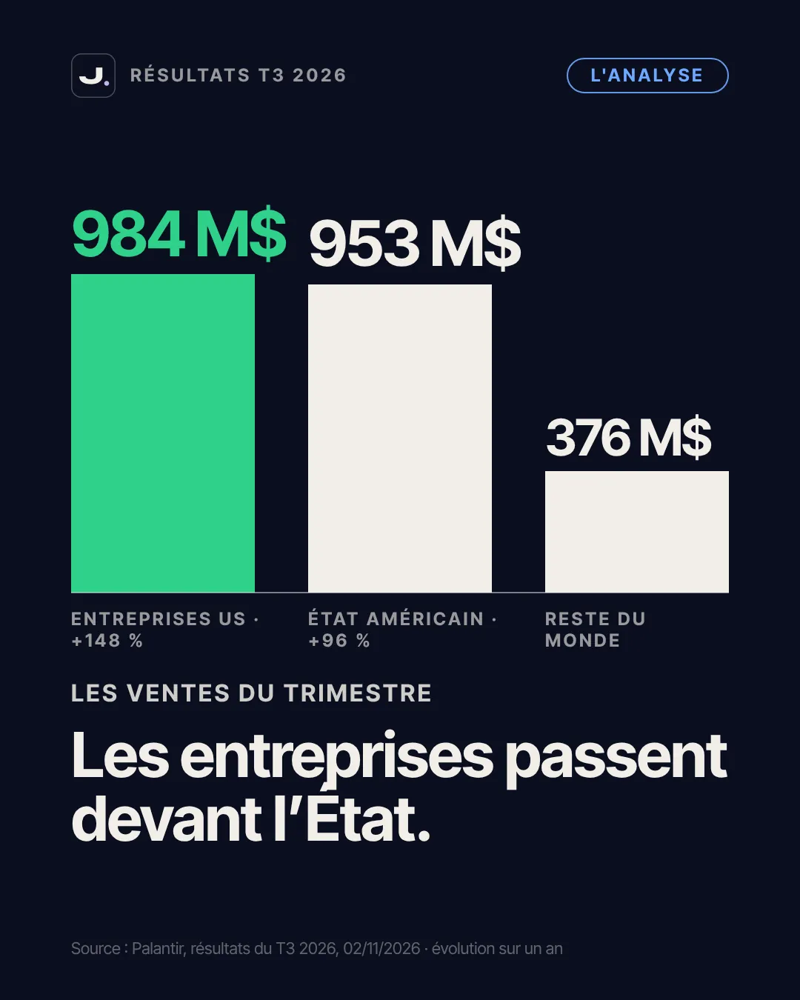
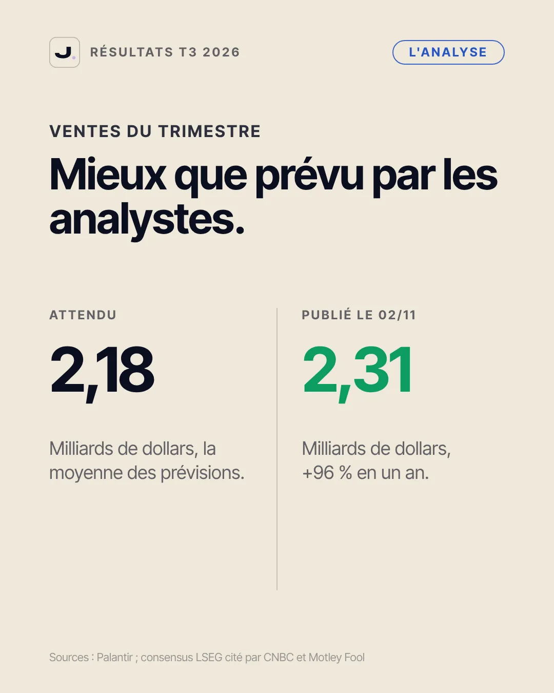
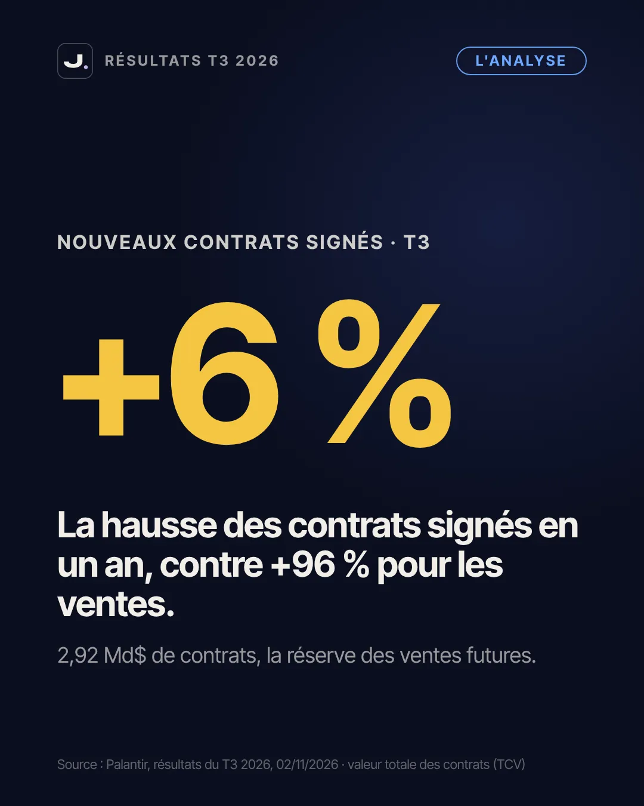
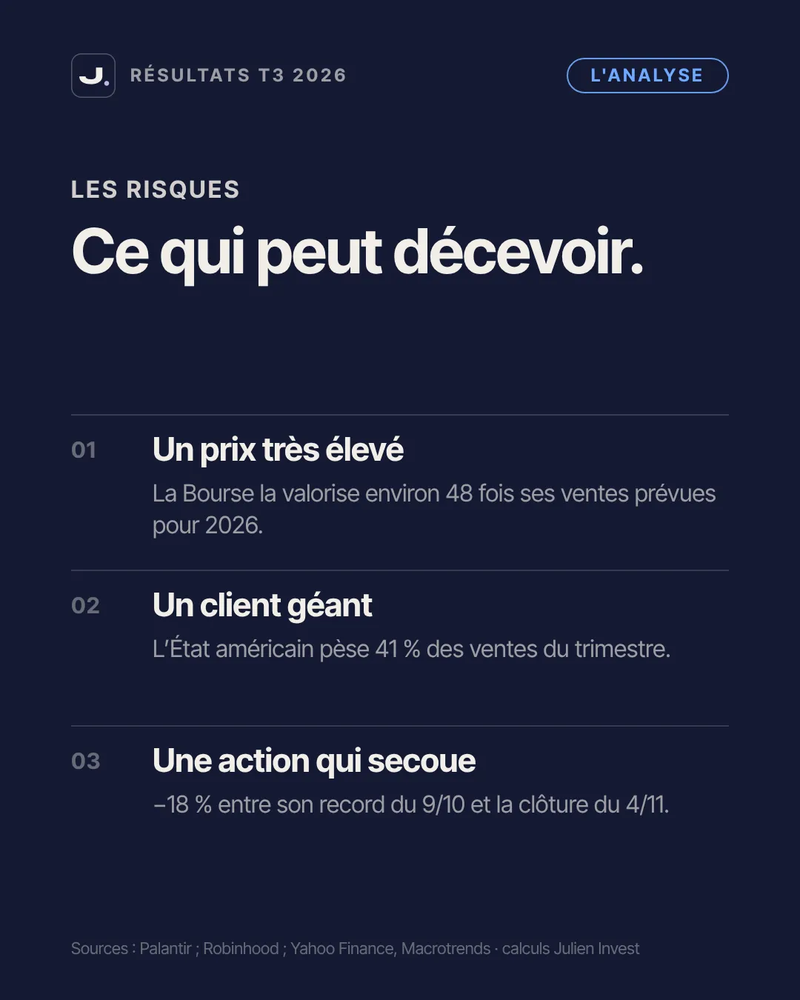
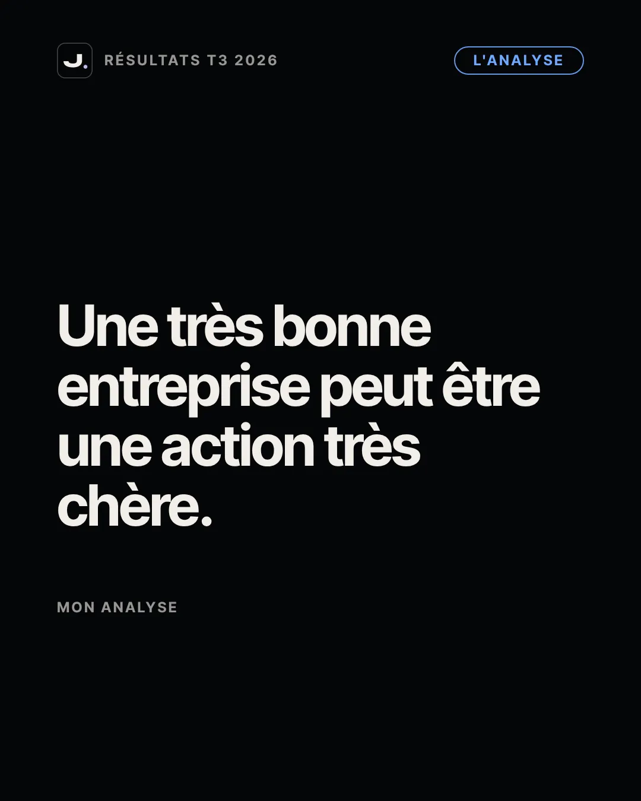
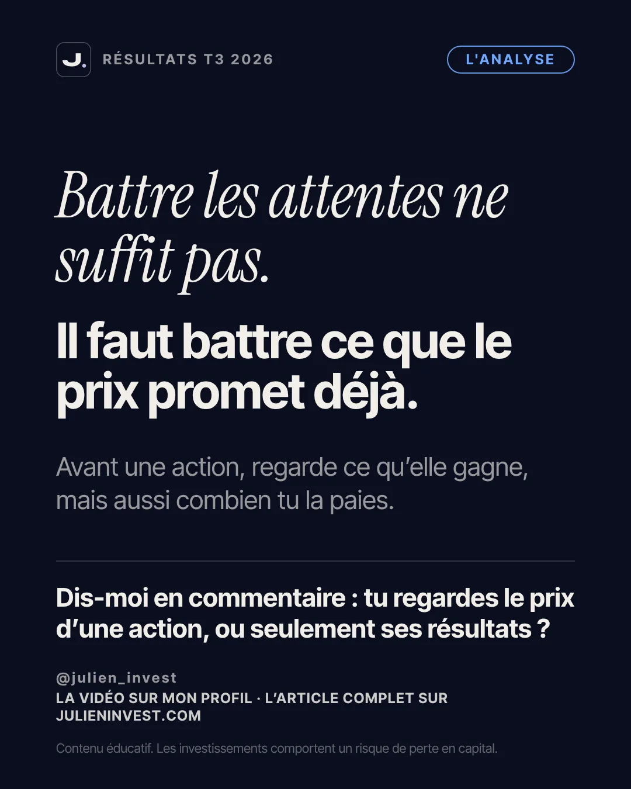

Cet article approfondit mon carrousel de la semaine. Si tu n'as jamais analysé une entreprise, commence par mon guide sur l'analyse fondamentale, puis reviens ici : tu verras la méthode appliquée à un cas réel.
- Ce que fait Palantir, expliqué simplement
- Les chiffres clés du troisième trimestre 2026
- Ce qu'attendait le marché
- Le chiffre qui a inquiété : les nouveaux contrats signés
- Le vrai sujet : le prix que la Bourse paie déjà
- Méthode : lire des résultats trimestriels en 5 étapes
- Les erreurs fréquentes face à ce genre d'actualité
- Les risques à garder en tête
- Ce que cette analyse ne dit pas
- Passer à l'action
- Le carrousel en images
- Questions fréquentes
Ce que fait Palantir, expliqué simplement
Palantir est une entreprise américaine de logiciels, cotée au Nasdaq sous le symbole PLTR. Fondée en 2003 et installée à Denver, elle vend des logiciels qui rassemblent les données éparpillées d'une organisation pour l'aider à prendre des décisions. Imagine une armée, un hôpital ou un industriel qui a des informations dans des dizaines de systèmes différents : Palantir les relie, les rend lisibles et permet d'agir dessus.
L'entreprise a longtemps été connue pour son travail avec les États, notamment l'administration américaine et ses armées, grâce à sa plateforme Gotham. Elle vend aussi Foundry aux entreprises privées, et depuis quelques années AIP, sa plateforme qui permet d'utiliser l'intelligence artificielle sur les données d'une organisation. C'est ce dernier produit qui alimente l'enthousiasme actuel autour du titre.
Retiens une idée : Palantir ne vend pas de puces ni de matériel. Elle vend des logiciels, souvent sous forme de contrats pluriannuels. C'est important pour comprendre la suite, car la valeur des contrats signés est un indicateur clé des ventes futures.
Les chiffres clés du troisième trimestre 2026
Voici ce que Palantir a publié le 2 novembre 2026 pour le trimestre clos le 30 septembre :
- Chiffre d'affaires : 2,31 milliards de dollars, en hausse de 96 % sur un an (contre 1,18 milliard au troisième trimestre 2025).
- Bénéfice net : 1,13 milliard de dollars, contre 476 millions un an plus tôt, soit une hausse de 137 %.
- Entreprises américaines (ce que Palantir appelle le commercial américain) : 984 millions de dollars, en hausse de 148 %.
- Gouvernement américain : 953 millions de dollars, en hausse de 96 %.
- Reste du monde : 376 millions de dollars, en additionnant les entreprises et les États hors des États-Unis.
Le fait marquant du trimestre : pour la première fois de son histoire, Palantir a vendu davantage aux entreprises américaines qu'à l'État américain. C'est un signal important, car une entreprise qui dépend moins d'un seul client devient en principe moins fragile.
L'entreprise a aussi relevé sa prévision pour l'ensemble de l'année 2026, à environ 8,53 milliards de dollars de ventes. Attention, c'est une prévision de l'entreprise, pas un résultat : elle peut être atteinte, dépassée ou manquée.
Ce qu'attendait le marché
En Bourse, un résultat ne se juge jamais seul. Il se compare à ce qu'attendaient les analystes, c'est ce qu'on appelle le consensus. Pour ce trimestre, la moyenne des analystes suivis par LSEG tablait sur 2,18 milliards de dollars de ventes. Palantir a publié 2,31 milliards : c'est nettement mieux que prévu.
Logiquement, une action qui bat les attentes devrait monter. Le 3 novembre, l'action a pourtant perdu jusqu'à environ 8 % en début de séance, avant de finir en baisse de 1,65 % à 175,40 dollars. Le lendemain, elle a clôturé à 171,70 dollars. Entre son record de clôture du 9 octobre, à 209,05 dollars, et la clôture du 4 novembre, le recul atteint environ 18 %.
Pour comprendre ce décalage, il faut regarder deux choses que les gros titres oublient souvent : les nouveaux contrats signés et le prix que la Bourse paie déjà pour l'entreprise.
Le chiffre qui a inquiété : les nouveaux contrats signés
Palantir publie chaque trimestre la valeur totale des contrats signés, souvent appelée TCV, pour total contract value. C'est le montant de tous les contrats conclus pendant le trimestre, y compris ceux qui seront facturés sur plusieurs années. On peut le voir comme une réserve de ventes futures.
Au troisième trimestre 2026, cette valeur a atteint 2,92 milliards de dollars, soit une hausse de seulement 6 % sur un an. Les ventes, elles, ont progressé de 96 %. Selon CNBC, c'est précisément ce ralentissement des contrats signés qui a été pointé par les analystes après la publication.
Pourquoi est-ce si suivi ? Parce que les ventes d'aujourd'hui viennent en partie des contrats signés hier. Si la signature de nouveaux contrats ralentit, la croissance des ventes peut ralentir plus tard. Ce n'est pas une certitude : un trimestre peut être faible et le suivant très fort, car les gros contrats arrivent de manière irrégulière. Mais pour une action dont le prix suppose une croissance très forte pendant longtemps, le moindre signe de ralentissement compte.
Le vrai sujet : le prix que la Bourse paie déjà
Au 4 novembre 2026, la capitalisation de Palantir, c'est-à-dire la valeur de toutes ses actions en Bourse, tournait autour de 410 milliards de dollars. Si on la compare aux ventes que l'entreprise prévoit pour toute l'année 2026, environ 8,53 milliards, on obtient un rapport d'environ 48. Autrement dit, la Bourse valorise Palantir près de 48 fois ses ventes annuelles prévues.
Ce calcul est simple, et c'est le mien : il s'agit de diviser la capitalisation par le chiffre d'affaires prévu. Il donne un ordre de grandeur, pas une vérité absolue, et il change chaque jour avec le cours de l'action. Mais il permet de comprendre l'essentiel : à ce niveau, le marché ne paie pas seulement les résultats actuels. Il paie des années de croissance très rapide à venir.
C'est là que réside le paradoxe. Quand le prix suppose déjà la perfection, battre les attentes du trimestre ne suffit plus. Il faut rassurer sur tous les indicateurs à la fois, y compris ceux qui annoncent l'avenir, comme les contrats signés. Selon moi, c'est la meilleure illustration d'une règle simple : une très bonne entreprise peut être une action très chère.
Méthode : lire des résultats trimestriels en 5 étapes
Tu peux appliquer cette grille à n'importe quelle entreprise qui publie ses résultats, pas seulement à Palantir.
Étape 1 : trouve le communiqué officiel
Chaque entreprise cotée publie ses résultats sur son site, dans la rubrique dédiée aux investisseurs. Pour une entreprise américaine, le document est aussi déposé auprès de la SEC. C'est la source la plus fiable, avant tout article de presse.
Étape 2 : regarde les ventes et leur évolution sur un an
Compare toujours un trimestre au même trimestre de l'année précédente. Comparer à un trimestre voisin peut être trompeur à cause des effets saisonniers.
Étape 3 : compare au consensus
Un chiffre en hausse peut décevoir s'il est inférieur à ce qu'attendaient les analystes. Les médias financiers indiquent presque toujours le consensus à côté du chiffre publié.
Étape 4 : cherche l'indicateur qui annonce l'avenir
Pour un éditeur de logiciels, ce sont les contrats signés ou le carnet de commandes. Pour un industriel, les prises de commandes. C'est souvent là que la Bourse regarde en premier.
Étape 5 : mets le prix en face
Divise la capitalisation par les ventes ou par les bénéfices. Tu n'as pas besoin d'un modèle compliqué : il s'agit juste de savoir si le marché paie une entreprise normale ou une entreprise dont il attend énormément. Mon article sur le stock picking détaille ces ratios.
Les erreurs fréquentes face à ce genre d'actualité
- Confondre bonne entreprise et bonne affaire. Une croissance spectaculaire ne dit rien du prix payé. Les deux questions sont séparées.
- Réagir au premier mouvement de cours. Le 3 novembre, l'action a perdu jusqu'à environ 8 % en début de séance avant de finir en baisse de 1,65 %. Juger une entreprise sur quelques heures de cotation n'a pas de sens pour un investisseur de long terme.
- Lire seulement le titre. « Ventes en hausse de 96 % » et « action en baisse » sont tous deux vrais. Il faut lire le détail pour comprendre comment ils coexistent.
- Ignorer la concentration. L'État américain pèse encore 41 % des ventes du trimestre. Une décision budgétaire peut donc avoir un effet important.
- Mettre une grosse part de son épargne sur une seule action. Même une très belle entreprise peut perdre une part importante de sa valeur en quelques semaines, comme le montre le recul d'environ 18 % depuis le record d'octobre.
Les risques à garder en tête
Une valorisation très élevée. À environ 48 fois les ventes prévues pour 2026, la moindre déception peut peser fortement sur le cours. Ce multiple baisse si l'action recule, et monte si elle repart.
Un client dominant. Le gouvernement américain représente 953 millions de dollars de ventes au troisième trimestre, soit 41 % du total. Les budgets publics, les élections et les priorités militaires influencent directement l'activité.
Des contrats irréguliers. La hausse de seulement 6 % des contrats signés peut être un trimestre creux ou le début d'un ralentissement. Personne ne le sait encore : il faudra regarder les prochains trimestres.
Une action très volatile. Le cours a fortement varié ces derniers mois, avec un recul d'environ 18 % entre le 9 octobre et le 4 novembre. C'est le prix d'une action dont la valeur repose beaucoup sur l'avenir.
Ce que cette analyse ne dit pas
Cette analyse s'appuie sur un seul trimestre. Les contrats signés varient beaucoup d'un trimestre à l'autre, et un seul chiffre ne suffit pas à conclure à un ralentissement durable. Le calcul de valorisation dépend du cours du jour : il était d'environ 48 au 4 novembre, il peut être différent quand tu lis ces lignes.
Elle ne dit pas non plus si l'action est trop chère ou bon marché. Certains investisseurs estiment que la croissance de Palantir justifie ce prix, d'autres pensent l'inverse. Mon rôle n'est pas de trancher pour toi, mais de te donner les outils pour te faire ton propre avis. Et surtout, aucune analyse ne remplace la question de départ : cette action a-t-elle sa place dans ton portefeuille, compte tenu de ton horizon et de ta tolérance au risque ?
Si tu investis surtout via un ETF Monde, tu es peut-être déjà exposé à Palantir sans le savoir, puisque les grands indices américains intègrent les plus grosses capitalisations. Mon guide sur les ETF Monde explique comment ça fonctionne.
Passer à l'action
La première étape n'est pas de choisir une action, c'est de savoir quel investisseur tu es. Combien de temps peux-tu laisser ton argent investi, et quelle baisse peux-tu supporter sans paniquer ? Le test gratuit de profil d'investisseur te donne une réponse en quelques minutes.
Ensuite, il te faut une enveloppe adaptée, comme un PEA ou un compte titres. Pour savoir où ouvrir ton compte, j'ai comparé les courtiers dans mon comparateur de courtiers, et je regroupe mes offres sur la page recommandations et parrainages. Ce sont des liens de parrainage : si tu ouvres un compte par leur intermédiaire, je peux toucher une commission, sans surcoût pour toi.
Le carrousel en images
Le résumé de cet article en 9 slides, à enregistrer ou à partager.








Un nouveau sujet chaque lundi, vendredi et dimanche : suis la série sur Instagram · TikTok · YouTube.
Questions fréquentes
Que fait l'entreprise Palantir ?
Palantir vend des logiciels qui rassemblent et analysent les données d'une organisation pour l'aider à décider. Ses clients sont des États, notamment l'administration américaine, et de plus en plus d'entreprises privées.
Quels sont les résultats de Palantir au troisième trimestre 2026 ?
Palantir a publié le 2 novembre 2026 un chiffre d'affaires de 2,31 milliards de dollars, en hausse de 96 % sur un an, et un bénéfice net de 1,13 milliard de dollars, contre 476 millions un an plus tôt.
Pourquoi l'action Palantir a-t-elle baissé après de bons résultats ?
Les ventes ont battu les attentes, mais la valeur des nouveaux contrats signés n'a progressé que de 6 % sur un an. Or la Bourse valorisait déjà Palantir environ 48 fois ses ventes prévues pour 2026 : à ce prix, le moindre signe de ralentissement pèse sur le cours.
Qu'est-ce que la valeur totale des contrats (TCV) ?
C'est le montant de tous les contrats signés pendant un trimestre, y compris ceux qui seront facturés sur plusieurs années. Elle donne une idée des ventes futures d'un éditeur de logiciels.
Faut-il acheter l'action Palantir ?
Je ne fais pas de recommandation d'achat ou de vente. Cet article explique les chiffres et les risques pour t'aider à comprendre. La décision dépend de ton horizon, de ton profil de risque et de la place d'une action individuelle dans ton portefeuille.
Tu veux la méthode complète, pas juste cet article ?
Reçois mon ebook par email : les erreurs qui coûtent le plus cher quand on débute, et la marche à suivre pour les éviter.
- Au troisième trimestre 2026, les ventes de Palantir ont atteint 2,31 milliards de dollars, en hausse de 96 % sur un an, au dessus des 2,18 milliards attendus.
- Pour la première fois, les entreprises américaines ont pesé plus que l'État américain dans ses ventes.
- La valeur des nouveaux contrats signés n'a progressé que de 6 % sur un an : c'est ce chiffre qui a inquiété.
- La Bourse valorise Palantir environ 48 fois ses ventes prévues pour 2026 : à ce prix, battre les attentes ne suffit plus.
- Une très bonne entreprise peut être une action très chère : regarde toujours ce que tu paies, pas seulement ce que l'entreprise gagne.
Sources
- Palantir, communiqué de résultats du T3 2026, 8-K déposé le 02/11/2026
- Palantir, rapport trimestriel 10-Q au 30/09/2026
- CNBC, résultats de Palantir et consensus LSEG, 02/11/2026
- CNBC, réaction du titre et contrats signés, 03/11/2026
- Investing.com, présentation des résultats du T3 2026
- Macrotrends, historique du cours de Palantir (clôtures du 09/10 et du 04/11/2026)
- CompaniesMarketCap, capitalisation de Palantir, novembre 2026
Contenu éducatif, pas un conseil en investissement. Investir comporte un risque de perte en capital ; les performances passées ne préjugent pas des performances futures.
Apprends à analyser une entreprise
Mon guide de l'analyse fondamentale t'explique pas à pas comment lire les chiffres d'une entreprise avant d'investir.
Lire le guide